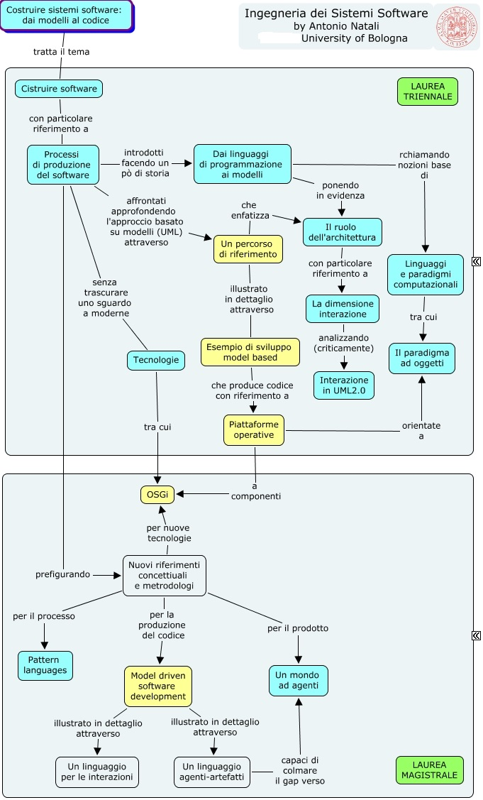

Costruire (sistemi) software

Costruire software
Costruire software
La crisi del software
La dimensione algoritmica
La dimensione sistemistica
L'ingegneria del software
L'ingegneria del software
Metodo e metodologia
Breve storia delle metodologie
Capability Maturity Model
Home
Processi
Linguaggi
UML
Sistemi sw
Interazione
Pattern
Percorso
Analisi
Design
Testing
Tecnologie
Sw factory
Readings
Software bugs
By AN Unibo-DISI